Shared flat, shared work, no flat parent
Teilen is a concept app for WGs, the shared flats many people in Berlin live in. It puts the two classic sources of conflict on one screen: who paid for what, and whose turn it is to clean.

Problem
Splitting money in a flat is well solved. Sharing work is not. The chore plan is paper on the fridge, and one person ends up reminding everyone. That role creates more tension than the money.
Solution
One app for a flat's balance and its chore rotation. The app does the reminding, the rotation keeps effort fair, and settling up takes the fewest possible transfers.
What I did
Problem framing, assumptions and a research plan, a proto-persona and journey, MVP scope, user flow, wireframes, UI and a small design system, empty states, and a clickable prototype.
Context
The fight is rarely about €4. It is about fairness.
A typical WG runs on three tools: a group chat, a chore plan on the fridge, and an expense-splitting app or a spreadsheet. The money tools work well. The chore plan does not: nobody updates it, and nobody sees who actually did what.
So one person becomes the "flat parent" who reminds everyone, and slowly becomes the person everyone finds annoying. I wanted to see what happens when the app takes over that role.
How might we make shared work in a flat visible and fair, without anyone having to be the one who reminds the others?
Assumptions
What I believe, and how I would check it
These are the assumptions the whole concept stands on. If the first one is wrong, Teilen is just another splitting app.
| Assumption | Why I think so | How I would test it |
|---|---|---|
| Conflict comes from unfair effort, not money | People forgive a late €4 transfer faster than a dirty bathroom. | 6 interviews: "Tell me about the last argument in your flat." |
| Chores and costs belong in one place | Both are about "who does their share". Two apps split one feeling. | Card sorting with 8 people, then a fake-door test. |
| An app reminder costs less than a flatmate reminder | If the app nudges, no one has to be the bad guy. | Two-week diary study in 3 flats with a shared rotation. |
| People will open it weekly | Chores give a weekly reason to return, money only a monthly one. | Track weekly active flats in a small pilot. |
People
Show detailsHide details
Who I designed for
Jonas, 26
Master's student, lives with three flatmates in a WG in Neukölln. The one who always buys toilet paper.
“I don't want to be the flat parent. I just want it to be fair without a meeting.”
Proto-persona · based on assumptionsGoals
- Know where he stands with money at a glance
- A cleaning plan that people actually follow
- Never write "guys, the bathroom…" in the chat again
Frustrations
- Small costs get forgotten and add up
- The paper plan on the fridge is three weeks old
- Swapping a week needs a long chat thread
Context
- Uses a splitting app, but only for big costs
- Shares the flat with people from 3 countries
- Checks his phone in short moments
What would help
- One screen for balance and his turn
- Neutral reminders from the app
- A quick way to swap
A typical month in a WG, before Teilen
| Buys something | Cleaning week | Someone forgets | Reminder in chat | Month end | |
|---|---|---|---|---|---|
| Doing | Pays €9.80 for soap, doesn't log it | Checks the fridge plan, unsure whose turn | Bathroom is not done | Writes a careful message | Someone builds a spreadsheet |
| Thinking | "Too small to bother." | "Wasn't it Lea's turn?" | "Again?" | "I sound like a parent." | "Who owes whom now?" |
| Feeling | |||||
| Opportunity | Logging in 3 taps | Rotation visible on home | The app nudges, not a person | Swap requests built in | Settle with fewest transfers |
Principles & flow
Show detailsHide details
Three principles that shaped every screen
Reminders come from Teilen, in a neutral tone. No flatmate has to send them.
Home shows your balance and your chore. The rest of the flat comes below.
The rotation and the monthly fair-share view make effort visible over time, not just this week.
User flow
Home is the hub. Adding an expense and ticking a chore both bring you straight back, so the weekly loop stays short.
Wireframes to UI
Show detailsHide details
From grey boxes to a friendly interface
I sketched the hierarchy in grayscale first. Colour then got two jobs: indigo for your money and actions, one personal colour per flatmate so people are recognisable at a glance.
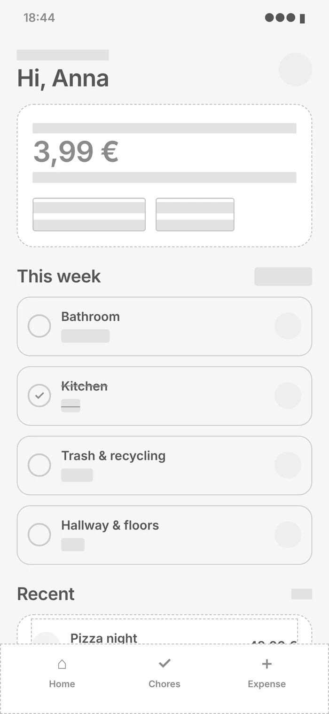
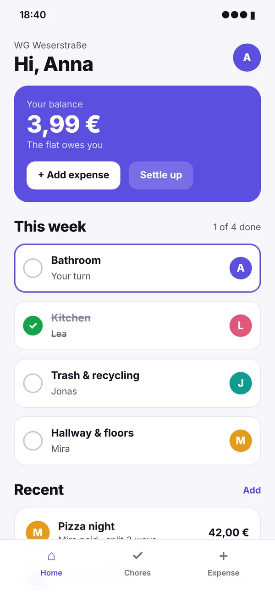
One home, two jobs
The balance card answers "where do I stand?". Directly below, this week's chores with your own task highlighted. Both reasons to open the app sit above the fold.
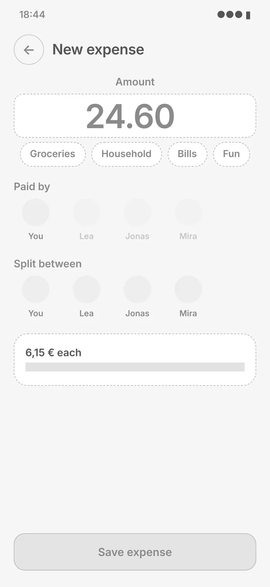
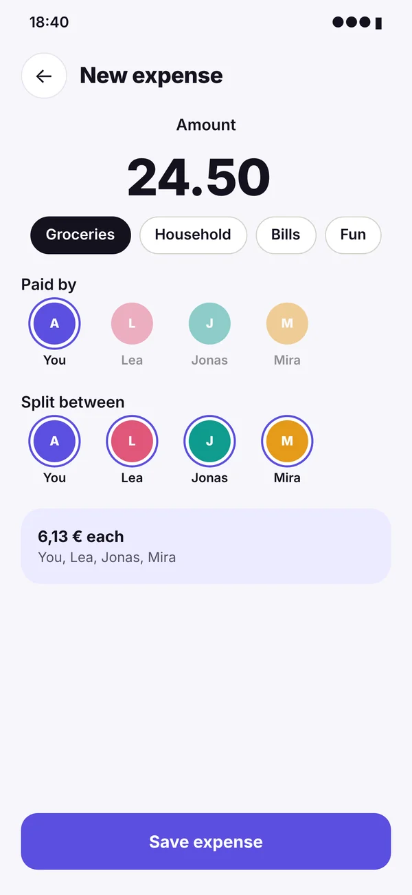
Logging in three taps
Amount, who paid, who shares. Everyone is selected by default, because most costs are for the whole flat. The live preview shows each share before saving.
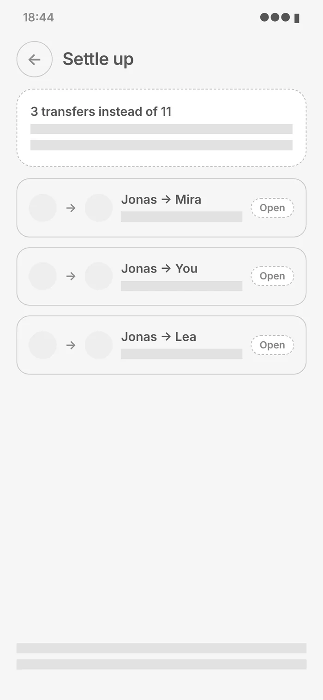
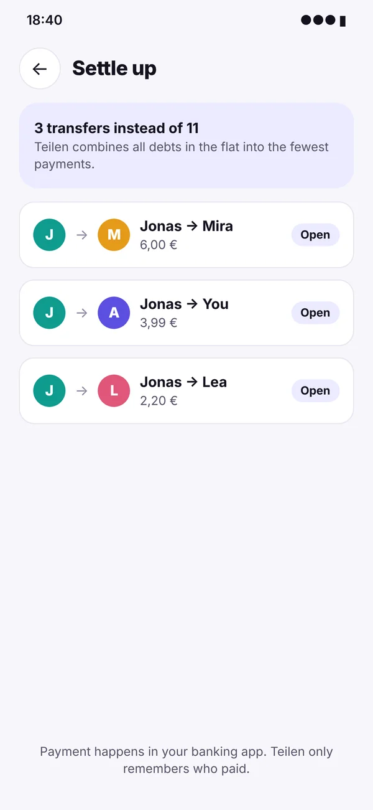
Fewest payments, not most precise
All debts in the flat are combined, so 11 small debts become 3 transfers. Payment happens in the bank app; Teilen only remembers who paid.
Key decisions
Decisions and the trade-offs behind them
In-app payments?
Payments need licences, fees and trust. The core problem is fairness, not moving money. Trade-off: one extra step for users.
Self-assigned chores or a rotation?
Choosing sounds free, but the same person always ends up with the trash. A rotation is boring, and boring is fair. Swaps keep it flexible.
Show who is behind, or only your own status?
A ranking turns a flat into a competition and shames people. The fair-share bars show balance over a month without pointing at anyone this week.
Design system
Show detailsHide details
A small, friendly design system
One brand colour for actions and money, plus four personal colours for flatmates. Inter keeps numbers and German words readable.
actions, balance
highlights
personal colour
personal colour
personal colour
text
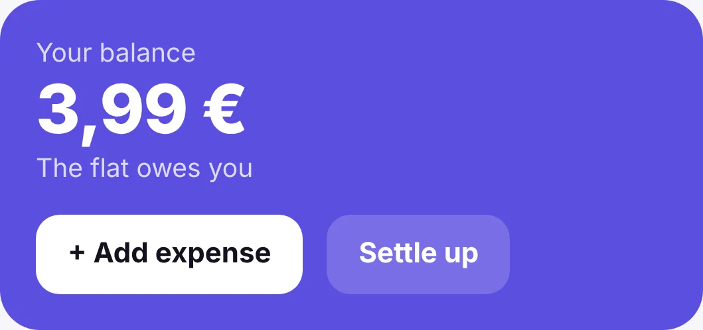
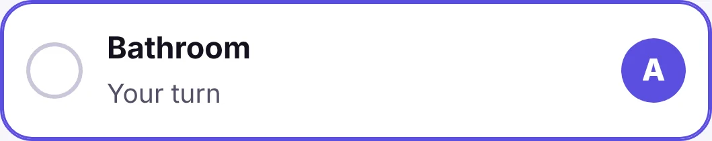
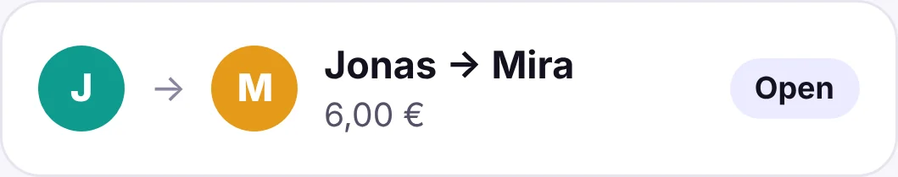
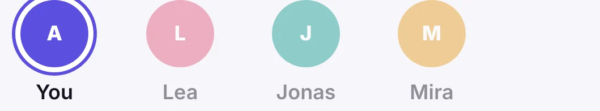
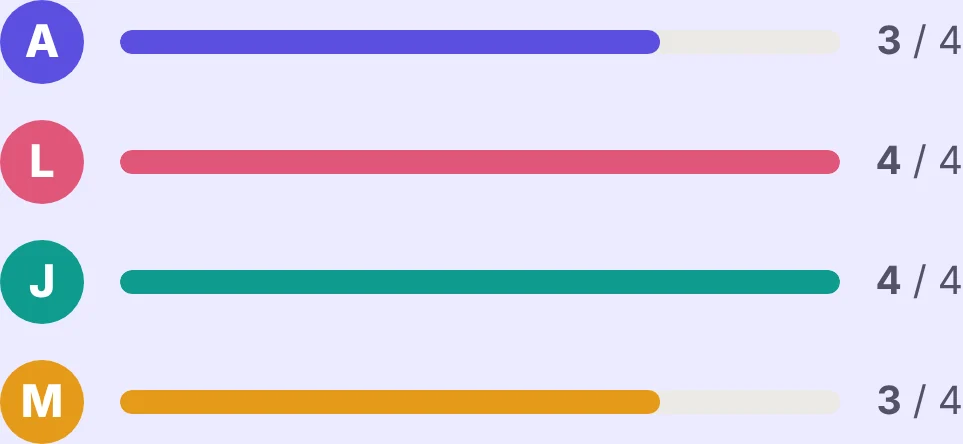
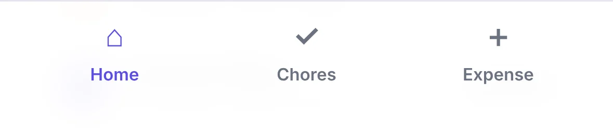
States & access
Show detailsHide details
Empty states and edge cases
A new flat starts with nothing, and a happy flat often has no debts. Those moments should feel calm, not broken.
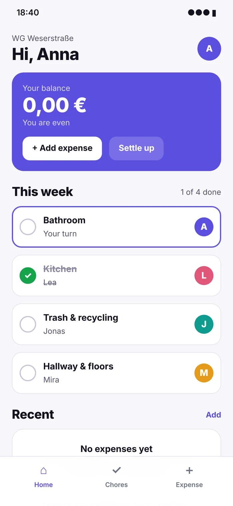
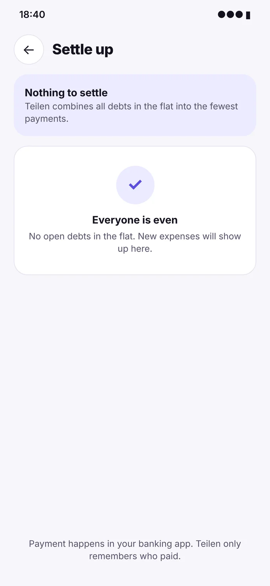
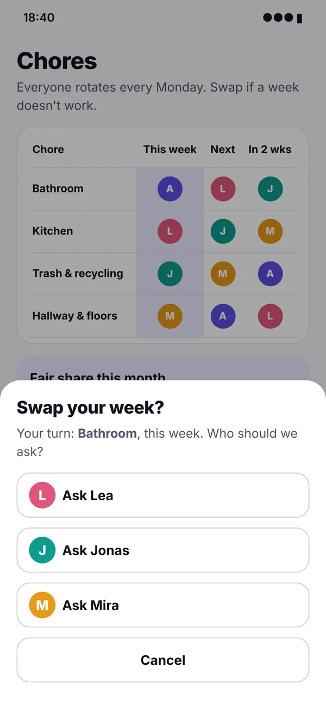
Accessibility
- Not colour aloneEvery flatmate has a colour and an initial, so people with colour vision deficiency can tell them apart.
- ContrastWhite text on indigo and dark text on tints meet WCAG AA.
- Touch targetsAvatars in pickers and all buttons are at least 44 px.
- Clear numbersAmounts use German formatting (24,50 €) and always say who pays whom.
Final design
The final screens
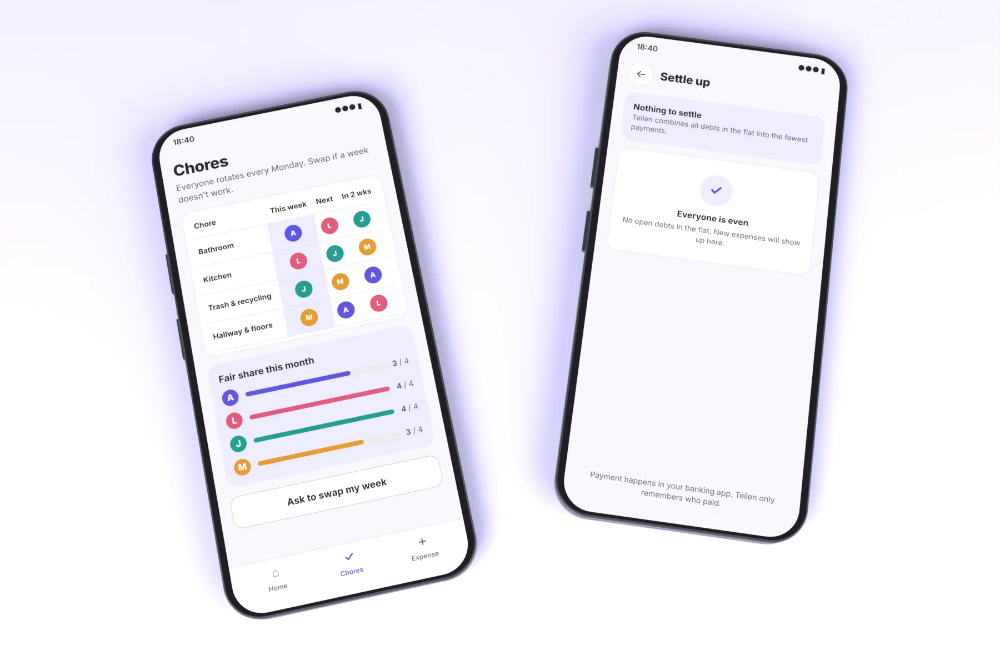
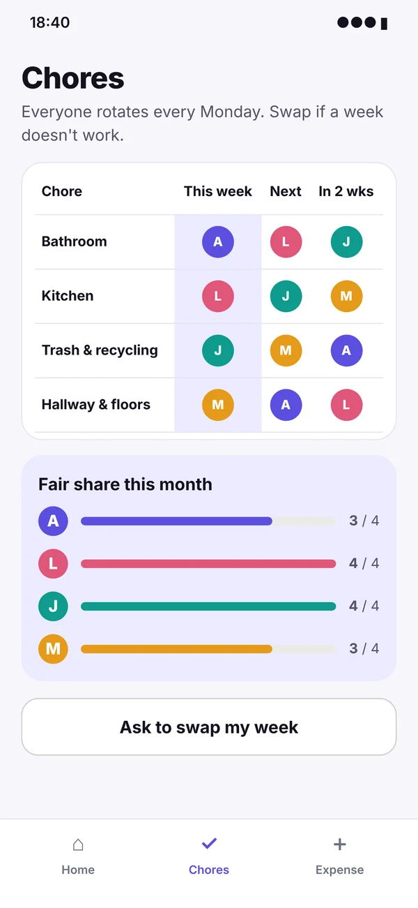
Prototype
Try it yourself
The prototype runs in your browser with real logic: balances are recalculated and debts are simplified. Nothing is saved or paid.
- Tick off your chore: Bathroom
- Add an expense and change who shares it
- Open Settle up and mark your transfer as paid
- In Chores, ask a flatmate to swap
Measuring success
What I would measure in a pilot
A pilot with 10 to 20 flats. These are the signals I would watch and the direction I would want to see. No targets before a baseline.
| Metric | Why it matters |
|---|---|
| North star: weekly active flats | Flats where at least 3 members did something this week. One active person means the app became a new flat parent. |
| Chores done by Sunday | Share of rotation tasks done within their week. Tells us if the rotation is realistic. |
| Swap requests accepted | A healthy flat swaps. Many declined swaps would point to tension the app cannot fix. |
| Guardrail: muted notifications | If people mute Teilen, the nudges feel like nagging. |
Reflection
What I learned and what comes next
The hardest part was tone, not layout. The same reminder can feel like help or like control. Making the app the sender, and keeping the language neutral, was the core design decision.
If I continued, I would test the first assumption before building anything: if conflicts in flats are mostly about money after all, the chore side should be a small feature, not half the product.